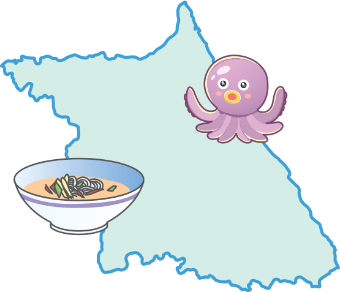

- 그림
- 물음 1
- 물음 2
- 물음 3
-
-
다각형의 둘레와 넓이
이번 학기에 배운
내용으로 제주도를
소개하는 지도를
만들자!제주도의 넓이는
약 1850 ㎢야.
또 어떤 정보를
소개할까?제주도에는
오메기떡이
유명하대. -
약수와 배수규칙과 대응
한 상자에 8개씩 든
오메기떡을 2상자
사면 몇 명에게
똑같이 나누어 줄
수 있을까?약수와 배수
단원에서 배웠던
내용으로 구해
보자.이 올레길에서는
자전거를 탈 수 있
구나. 두발자전거의
수와 바퀴의 수
사이에는 대응 관계가
있어. -
분수의 덧셈과 뺄셈
국수 요리도
유명해.매일 밀가루2㎏과- 3
- 4
메밀가루㎏을- 4
- 5
반죽해서 면을 만듭니다.다른
여행지를
소개하는
지도도
만들어 볼까?완성!
-
-
이번 학기에 배운 내용을 떠올려 보세요.
예자연수의 혼합계산, 약수와 배수, 규칙과 대응,
약분과 통분, 분수의 덧셈과 뺄셈, 다각형의 둘레와 넓이에 대해서 배웠습니다. -
이번 학기에 배운 내용을 활용하여 가 보고 싶은 여행지를 소개하는 지도를 만들어 보세요.
 예강원도를 소개하는 지도를
만들어 보았습니다. -
완성한 지도를 칠판에 붙인 후 발표해 보세요.
예-
강원도의 넓이: 16875 ㎢
-
강원도에서 유명한 음식: 막국수, 문어숙회
-
비빔 막국수에 들어가는 고추장이큰술, 식초가
- 1
- 3
큰술일 때 두 양념의 합은- 3
- 4
(큰술)입니다.＋- 1
- 3
＝- 3
- 4
＋- 4
- 12
＝- 9
- 12
＝- 13
- 12
1- 1
- 12
-
문어 한 마리의 다리는 8개입니다. 따라서 문어의 수를 □, 문어 다리의 수를 △라고 하면 □×8＝△입니다.
-